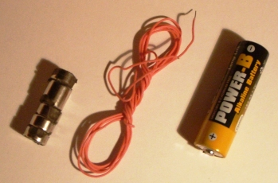
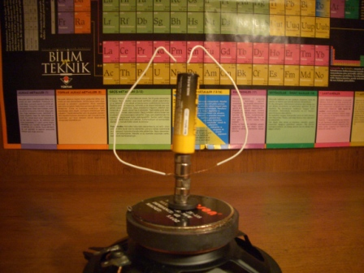
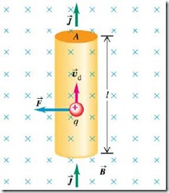

🎯 Deneyin Amacı
Pil motoru deneyinde, akım geçen bir iletkenin manyetik alanla etkileşerek mekanik bir kuvvet (tork) oluşturduğunu gözlemleriz. Böylece elektrik enerjisinin dönen bir sistemde mekanik enerjiye dönüştüğünü gösteririz.
🧰 Gerekli Malzemeler
- 1.5 V AA pil
- Bakır tel (yalıtımlı)
- Neodimyum disk mıknatıs
- Maket bıçağı veya pense

🧪 Deneyin Yapılışı
Bakır telden bir tel çerçevesi hazırlayın. Telin uçlarından birini pilin + ucuna, diğer ucunu pilin - ucuna temas edecek şekilde konumlandırın. Pilin + ucuna mıknatısı yapıştırın. Telin boşta kalan kısmı mıknatıs etrafında serbestçe dönebilecek şekilde yerleştirin.
Pil üzerinden akım akmaya başladığında, bakır tel mıknatıs etrafında dönmeye başlayacaktır.
📷 Deney Kurulumu

Basit bir elektrik motoru düzeni: Pil, mıknatıs ve bakır tel kullanılarak hazırlanmıştır.
🧠 Deneyin Fiziği
Deneyde manyetik alan iletelik akımının etkileşimi gözlemlenir. Mıknatıs, alt yüzeyi ile yere dik bir manyetik alan oluşturur. Pili üst yüzeyi yukarı gelecek şekilde yerleştirdiğimizde, mıknatısın manyetik alanı yukarı doğru yönelir. Pilin + ucundan çıkan akım, bakır tel çerçevesi boyunca akarak devresini tamamlar. Bu akım, manyetik alana dik olduğu için tel üzerine bir Lorentz kuvveti etki eder ve tel çerçevesi üzerinde bir tork oluşur. Böylece tel çerçevesi dönmeye başlar.
Lorentz kuvveti aşağıdaki formüllerle ifade edilir:
F = q v × B
Bir yük manyetik alan içinde hareket ederse Lorentz kuvvetine maruz kalır.
F = I L × B
Akım geçen bir iletken için kuvvet büyüklüğü, akım (I), iletken uzunluğu (L) ve manyetik alan (B) ile ilişkilidir.
Pil Motorunun Çalışma Prensibi

Yukarıdaki şemada bir homopolar motor düzeni gösterilmiştir. Pilin + ucundan çıkan akım (I), mıknatısın güçlü manyetik alanından etkilenerek bakır teli döndürür ve bir dönüş hareketi yaratır.
Sağ El Kuralı

Manyetik alan içinde akım geçen bir iletkene etki eden kuvvetin yönünü bulmak için sağ el kuralı kullanılır. Baş parmak F (kuvvet), işaret parmağı B (manyetik alan) ve orta parmak I (akım) yönlerini gösterir.
- Baş parmak → Kuvvet (F)
- İşaret parmağı → Manyetik Alan (B)
- Orta parmak → Akım (I)
🎬 Deney Videosu

Videoyu YouTube'da izlemek için görsele tıklayın.